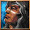
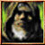

|
Rolling
|
จุดสีชมพูภายในเมือง อยู่ใกล้ๆ น้ำพุภายในเมือง เอาไว้สำหรับซื้อน้ำยาเพิ่มเลือดและเทเลพอร์ทสกอ
(ไว้สำหรับวาร์ปไป/กลับ ระหว่างเมืองและจุดอื่นๆ ที่วาร์ปมา) |
|
Fredrick
|
จุดสีดำภายในเมือง อยู่ทางตอนใต้ ไว้สำหรับซื้อขายอาวุธและเครื่องป้องกันต่างๆ
รวมทั้งซ่อมแซมได้ด้วย |
|

Ettn
|
จุดสีเขียวในเมือง อยู่ทางด้านทิศตะวันตก (ด้านซ้าย) ไว้สำหรับฝาก/ถอนสิ่งของ
รวมทั้งเงิน และสามารถให้ตัวละครตัวอื่นใน Account เดียวกันถอนสิ่งของ
รวมทั้งเงินออกมาได้อีกด้วย
|
|
Mael
|
จุดสีฟ้าทางตอนบนของเมือง ใช้เมื่อต้องการวาร์ปไปยังสถานที่ต่างๆ
ได้ มี 3 แห่งคือ ถ้ำก๊อบลิน ถ้ำปิ๊กมี่ และวัดเคทเทอ |
|
Alfred
|
จุดสีส้ม อยู่ด้านซ้ายบนของแผนที่ เป็นคนให้ Quest (ภาระกิจ)
ซึ่งเป็นการกำจัดศัตรู เมื่อทำสำเร็จ ก็จะได้รับรางวัล (อ่านรายละเอียดในหัวข้อ
Quest) |
|
Syheril
|
จุดสีส้ม เดินอยู่บริเวณใกล้ๆ กับน้ำพุทางด้านซ้าย เป็นคนให้
Quest (ภาระกิจ) ซึ่งเป็นส่งมอบสินค้า หรือหาสิ่งของ เมื่อทำสำเร็จ
ก็จะได้รับรางวัล (อ่านรายละเอียดในหัวข้อ Quest) |
|

Raskin
|
จุดสีส้ม อยู่ด้านขวาบนของแผนที่ ใช้สำหรับไถ่บาป (Redemption)
สำหรับคนที่ค่า "คุณธรรม" น้อยลง (เนื่องมาจากการ PK
จะกล่าวถึงภายหลัง) (ในตอนนี้ไม่สามารถใช้งานได้) ตอนนี้ใช้สำหรับทำ
Quest บางอย่าง |
|
Illein
|
จุดสีส้ม มักจะเดินอยู่แถวๆ ร้านขายอาวุธ เป็นชาวบ้านธรรมดา
แต่จะใช้ทำ Quest บางอย่าง |